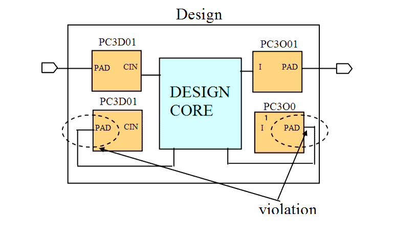

| Description | This rule fires when Leda detects cells whose PAD pin is not connected to an external signal of the top unit. You can activate this rule to double check such cells and PAD pins. |
| Policy | DESIGN |
| Ruleset | PAD |
| Language | VHDL/Verilog |
| Type | Hardware |
| Severity | Error |
This is an example of invalid Verilog code, followed by a circuit diagram that illustrates the problem:
module ntl_pad04_top(Ctrl_pad, Din_pad, Dout1_pad,Dout2_pad); input Ctrl_pad, Din_pad; output Dout1_pad,Dout2_pad; ... wire net_01; // an internal net Design_core U0(Ctrl, Din, Dout1, Dout2); ... //PAD cells - PC3O01(output pad cell) /PC3D01 (input pad cell) PC3D01 U1 (.PAD(Din_PAD), .CIN(Din)); // OK -- PC3D01.PAD is connected to the external signal (Din_pad) of top PC3D01 U2 (.PAD(Ctrl), .CIN(Ctrl_PAD)); // NTL_PAD04 fires -- PC3D01.PAD is not connected to external // signal of top PC3O01 U3 (.I(Dout1), .PAD(Dout1_PAD)); // OK -PC3O01.PAD is connected to the external signal (Dout1_pad) of top PC3O01 U4 (.I(Dout2_PAD), .PAD(Dout2)); // NTL_PAD04 fires -- PC3O01.PAD is not connected to external // signal of top ... endmodule